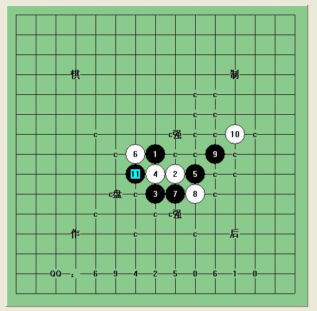
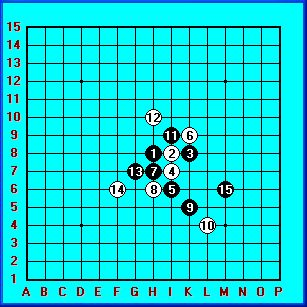

寒星求解
首页
江苏五子棋
#1 寒星求解 作者：百医天使 发表时间：2009-6-13 19:36:45
今天拆解寒星的时候，碰到了这样的一个局面，不会，希望大虾指点
=======上图对应的爱五子棋谱代码如下，以便你拆解：========
h8h9h10i9j9g8i10j10g9h11f7e7g6h5
======================================================
#2 Re:寒星求解 作者：撒蓉儿 发表时间：2009-6-13 19:44:19
=======上图对应的爱五子棋谱代码如下，以便你拆解：========
h8h9h10i9j9g8i10j10g9h11f7e7g6h5f5
======================================================蓉儿个人认为黑应该扩大外势
#3 Re:寒星求解 作者：岳麓小棋后 发表时间：2009-6-13 19:47:38
=======上图对应的爱五子棋谱代码如下，以便你拆解：========
h8h9h10i9j9g8i10j10k8
======================================================没有盘端的话就必胜
#4 Re:寒星求解 作者：百医天使 发表时间：2009-6-13 19:54:57
容 儿的可能有强防，不太容易解决
=======上图对应的爱五子棋谱代码如下，以便你拆解：========
h8h9h10i9j9g8i10j10g9h11f7e7g6h5f5f6
======================================================
=======上图对应的爱五子棋谱代码如下，以便你拆解：========
h8h9h10i9j9g8i10j10g9h11f7e7g6h5f5f4
======================================================小棋后的方法，能发个地毯？地毯才是王道
#5 Re:寒星求解 作者：岳麓小棋后 发表时间：2009-6-13 19:56:23
可以地毯，必胜了，刚验完
咯，不好意思，还有一路出现盘端，解决下
#6 Re:寒星求解 作者：百医天使 发表时间：2009-6-13 20:05:39
应该 是这路吧
=======上图对应的爱五子棋谱代码如下，以便你拆解：========
h8h9h10i9j9g8i10j10k8l7g9h11
======================================================
#7 Re:寒星求解 作者：岳麓小棋后 发表时间：2009-6-13 20:17:08
必胜了，等我发馅饼吧 ，不是这路
，不是这路
#8 Re:Re:寒星求解 作者：岳麓小棋后 发表时间：2009-6-13 20:23:59

 岳麓小棋后寒恒经典回首.rar
岳麓小棋后寒恒经典回首.rar
#9 Re:寒星求解 作者：极地剑客 发表时间：2009-6-13 20:30:18
会员版终结者所~很强悍噢~测试版的连盘面颜色都不能改~
#10 Re:寒星求解 作者：岳麓小棋后 发表时间：2009-6-13 20:39:11
测试版也能改变盘面颜色的，黄色刺眼，豆沙色保护眼睛，友情提示
#11 Re:寒星求解 作者：百医天使 发表时间：2009-6-13 20:39:30
万分感谢小棋后，为了感谢大家，发个弱六终结
=======上图对应的爱五子棋谱代码如下，以便你拆解：========
h8h9h10i9j9g8i10
======================================================
#12 Re:Re:寒星求解 作者：百医天使 发表时间：2009-6-13 20:42:30
附上终结者版，可能 有错误，没有手工验证过，
#13 Re:寒星求解 作者：百医天使 发表时间：2009-6-13 20:44:17
晕谱发哪了，不能怪我，不知道发哪了，
#14 Re:寒星求解 作者：疯刀 发表时间：2009-6-14 10:14:01
图片 不知道怎么发 就发步伐了。！
i7 F10 K8 L7 K9 K7 J8 H6 J6 K5 I8 L8 H7
#15 Re:寒星求解 作者：岳麓小棋后 发表时间：2009-6-14 10:19:04
=======上图对应的爱五子棋谱代码如下，以便你拆解：========
i7f10k8l7k9k7j8h6j6k5i8l8h7
======================================================这是什么？
#16 Re:寒星求解 作者：陨落之城 发表时间：2009-6-14 11:26:59
11楼可能没有点上传就回复了。
14L的步伐好诡异哦
#17 Re:寒星求解 作者：二十七刀 发表时间：2009-6-14 14:10:45
百医天使寒恒经典回首.rar

#18 Re:寒星求解 作者：岳麓小棋后 发表时间：2009-6-14 14:15:00
LS这个不就是我拆的那个吗，寒
#19 Re:寒星求解 作者：二十七刀 发表时间：2009-6-14 14:16:41
不好意思,我没下载你的谱
#20 Re:寒星求解 作者：岳麓小棋后 发表时间：2009-6-14 14:18:23
发错了，要把其他8手的地毯发上来
下载下来把我的谱名字都改了
#21 Re:寒星求解 作者：二十七刀 发表时间：2009-6-14 14:20:06
晕,我刚花了4分钟做的谱怎么就,不好意思
#22 Re:寒星求解 作者：二十七刀 发表时间：2009-6-14 14:21:20
刚下载了你的看了,估计把自己的谱给弄没了尴尬
#23 Re:寒星求解 作者：岳麓小棋后 发表时间：2009-6-14 14:21:45
等馅饼
#24 Re:寒星求解 作者：二十七刀 发表时间：2009-6-14 14:26:02
晕,不弄了,尴尬,之前我是没下载你的谱先做了地毯,9手和11手我做了两个点的杀,而且13也不一样
晕,以后不发了,尴尬的事后来把你的下载了,估计是晕了,怎么把你的发上,自己做的没发上,哪里去了
#25 Re:寒星求解 作者：二十七刀 发表时间：2009-6-14 14:26:38
越描越黑
#26 Re:寒星求解 作者：岳麓小棋后 发表时间：2009-6-14 14:28:15
=======上图对应的爱五子棋谱代码如下，以便你拆解：========
h8i9j8i8i10h7j9i7o1j7
======================================================老实说这两个8手才是强防，难道你们弄出来了
#27 Re:寒星求解 作者：二十七刀 发表时间：2009-6-14 14:29:33
有志,把我发的帖子删了,都没权限删自己的帖子,尴尬,做法和刀魂一样了
#28 Re:寒星求解 作者：自来水 发表时间：2009-6-14 14:47:18
那个12的我的看法
=======上图对应的爱五子棋谱代码如下，以便你拆解：========
h8h7h6i7j7g8i6j6k8l9g7f6i5f8k5
======================================================
=======上图对应的爱五子棋谱代码如下，以便你拆解：========
h8h7h6i7j7g8i6j6k8l9g7f6i5j4i9
======================================================完全没有盘端问题。。。而且与寒星一打通了。
#29 Re:寒星求解 作者：岳麓小棋后 发表时间：2009-6-14 14:52:24
你要能这样必胜也可以，反正条条大路通罗马，我那套胜法因为有一样的棋型，所以就直接照搬了，盘端是相对那个棋型而言的，按你这么说，所有有盘端问题的原杀法盘端问题解决后就不叫盘端了
#30 Re:寒星求解 作者：lfzxdh 发表时间：2009-6-14 17:26:42
这么尴尬的事竟然也发生鸟~~~
#31 Re:寒星求解 作者：yoda 发表时间：2009-6-14 19:08:00
楼主的这个13可以必胜。
=======上图对应的爱五子棋谱代码如下，以便你拆解：========
h8h9h10i9j9g8i10j10g9h11f7e7g6h5f6
======================================================
#32 Re:寒星求解 作者：淡红的秋樱 发表时间：2009-6-14 19:35:52
=======上图对应的爱五子棋谱代码如下，以便你拆解：========
h8h9h10i9j9g10i8g8g9h7f9
======================================================
=======上图对应的爱五子棋谱代码如下，以便你拆解：========
h8h9h10i9j9g10i8g9g8j8
======================================================老实说还真没有多大问题。什么时候pk一下。
#33 Re:寒星求解 作者：百医天使 发表时间：2009-6-14 19:37:08
李老师寒星的确了得，这个十五的确能杀，说明这个十一，九也是能终结掉这个八，
#34 Re:寒星求解 作者：岳麓小棋后 发表时间：2009-6-14 19:38:30
淡红的秋樱LS，不妨多摆几手，寒恒的关键处你还没摆出来呢
#35 Re:Re:寒星求解 作者：百医天使 发表时间：2009-6-14 19:39:27
李老师之鬼之十五.rar
#36 Re:寒星求解 作者：岳麓小棋后 发表时间：2009-6-14 19:40:16
主要是这个8手弱了，导致胜法多样了
#37 Re:寒星求解 作者：聂淼 发表时间：2009-6-14 20:17:49
=======上图对应的爱五子棋谱代码如下，以便你拆解：========
h8h9h10i9j9g8g9
======================================================怎么正谱都推荐的这个７
#38 Re:寒星求解 作者：岳麓小棋后 发表时间：2009-6-14 20:21:43
LS这个7很猥琐
=======上图对应的爱五子棋谱代码如下，以便你拆解：========
h8i9j8i8i10j7i7h9g10g9j9h10
======================================================
=======上图对应的爱五子棋谱代码如下，以便你拆解：========
h8i9j8i8i10j7i7h9g10g9f9k9j9k8k7h11
======================================================最猥琐的7莫过于这个
=======上图对应的爱五子棋谱代码如下，以便你拆解：========
h8i9j8i8i10j7k6
======================================================此7后坐力非常好，搞的白棋很郁闷